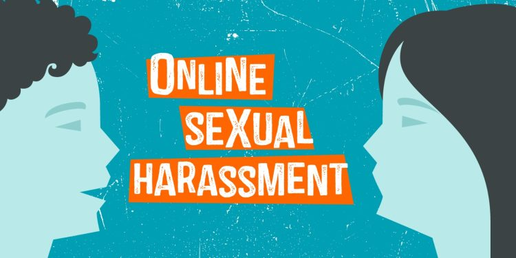
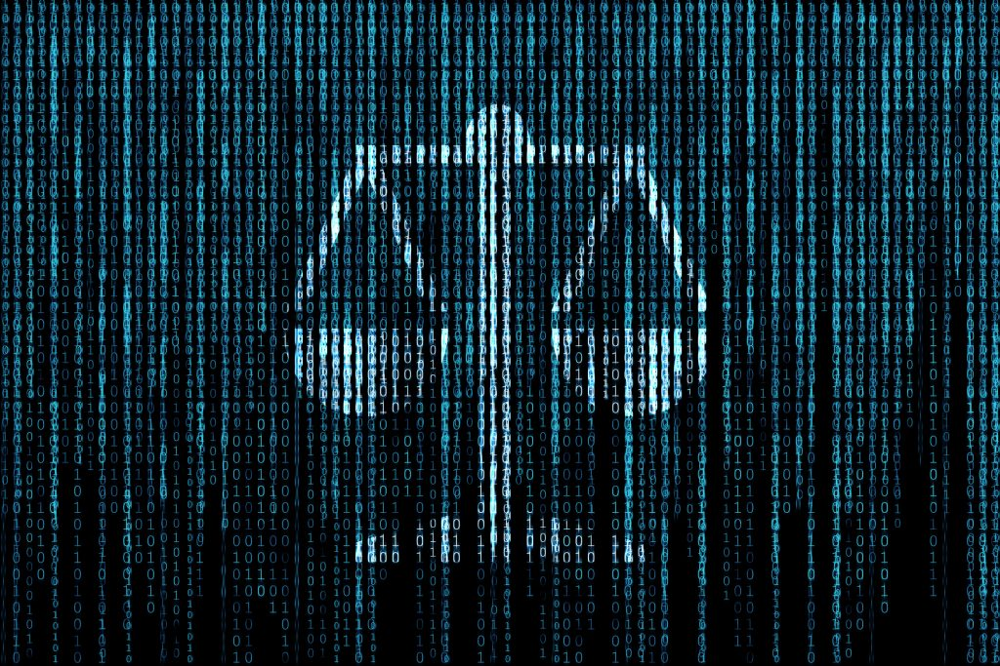

Apa Itu Ilegal content?
Illegal Contents Merupakan kejahatan dengan memasukkan data atau informasi ke internet tentang sesuatu hal yang tidak benar, tidak etis, dan dapat diangap melanggar hukum atau mengganggu ketertiban umum.
Bentuk kejahatan Cyber yang terkait dengan ilegal content
1. Pornografi Anak (Child Pornografi)
Pembuatan, distribusi, atau konsumsi materi pornografi yang melibatkan anak-anak di bawah umur adalah tindakan ilegal dan kejahatan serius di banyak yurisdiksi.
2. Penghinaan dan Pelecehan Online
Menggunakan platform online untuk menyebarkan konten yang menghina atau melecehkan individu atau kelompok lain dapat dianggap sebagai kejahatan siber dan dapat melibatkan aspek hukum seperti fitnah dan pencemaran karakter.

3. Perjudian Online Illegal
Menyediakan atau berpartisipasi dalam perjudian online yang melanggar hukum dapat dianggap sebagai kejahatan siber
Berikut Ini adalah Motif Ilegal Conten:
1. Keuntungan Finansial: Beberapa individu atau kelompok mungkin terlibat dalam kegiatan illegal contents karena melihatnya sebagai peluang untuk mendapatkan keuntungan finansial, seperti penjualan illegal contents atau penipuan online.
2. Eksploitasi Anak-anak: Motif ini terkait dengan produksi dan distribusi pornografi anak, yang sayangnya merupakan kejahatan serius yang melibatkan eksploitasi anak-anak.
3. Keamanan Nasional: Beberapa tindakan ilegal dapat dilakukan dengan motif keamanan nasional, seperti serangan siber atau penyebaran konten teroris untuk mencapai tujuan politik atau ideologis tertentu.
4. Diskriminasi dan Kebencian: Penggunaan platform online untuk menyebarkan konten yang merendahkan atau mempromosikan diskriminasi dan kebencian terhadap kelompok tertentu juga dapat menjadi motif.
5. Reputasi atau Pemerasan: Individu atau kelompok tertentu mungkin terlibat dalam menyebarkan konten yang merugikan reputasi orang lain atau lembaga dengan tujuan pemerasan atau kepentingan tertentu.
Cyberlaw Ilegal Content
Terkait dengan illegal contents, beberapa aspek hukum siber yang relevan melibatkan penegakan hukum terhadap tindakan ilegal di lingkungan digital. Berikut beberapa pertimbangan umum terkait ilegal contents dalam konteks cyberlaw:
1. Undang-Undang Hak Cipta: Cyberlaw melibatkan perlindungan terhadap hak cipta dalam konteks digital. Pelanggaran hak cipta online, seperti pembajakan perangkat lunak atau pembagian konten yang dilindungi hak cipta tanpa izin, dapat dikenai sanksi sesuai undang-undang hak cipta yang berlaku.
2. Perlindungan Anak Online: Banyak yurisdiksi memiliki undang-undang yang menyasar konten yang merugikan anak-anak, termasuk pornografi anak. Pembuatan, distribusi, atau konsumsi materi tersebut dapat dikenai sanksi hukum yang ketat.
3. Pencemaran Karakter dan Fitnah: Cyberlaw mencakup regulasi terkait pencemaran karakter, fitnah, dan penghinaan online. Individu atau organisasi yang merasa dirugikan oleh konten online dapat mengejar tindakan hukum terhadap pihak yang bertanggung jawab.
4. Kejahatan Siber: Hukum siber mencakup penegakan hukum terhadap berbagai kejahatan siber, termasuk serangan siber, ransomware, pencurian data, dan tindakan kejahatan lainnya yang melibatkan penggunaan teknologi informasi.